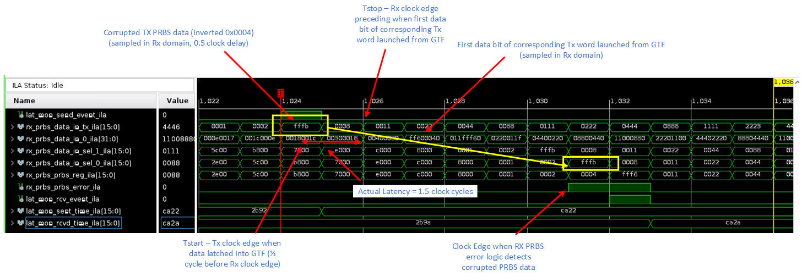

UL3524 Ultra Low Latency Trading |
GTF RAW Synchronized Latency Measurement in Hardware¶
This section provides steps to run the GTF RAW benchmark design and to measure and report GTF RAW latency on the UL3524 via the Vivado HW Manager.
The key steps to run the benchmark design are:
Program the device
Program the UL3524 with the bitstream (.bit) and ILA (.ltx).
(Optional) Enable ILA to capture and view waveforms
Run the latency measurement test
A Tcl-based script allows running the design in hardware. It initializes the GTF, transfers a predefined number of frames and computes latency based on the recorded TX and RX timestamps.
These steps are described in detail below.
Programming the Device¶
It is necessary to program the device prior to running the GTF benchmark design. Be sure to build the design prior to following these steps.
Connect to the card via the HW Manager and program the FPGA with the bitfile (.bit) and ILA debug (.ltx) files located in the following sub-directory (assumes the design was built within Vivado_Project:
./Vivado_Project/<project_name>/<project_name>.runs/impl_1/
Running the Latency Measurement Test¶
Instructions to run the GTF latency measurement test are given below.
In the Vivado Tcl console, change the working directory to:
cd ./GTF_Latency/Synchronized/GTFRAW_Latency_10G_Sync/Scripts
Use the following command to run the Tcl script. When the has completed, it will display ‘Complete’ in the Tcl console.
source ./run_tests.tcl
Once the test is complete, you can review the output log found in the following directory.
./GTF_Latency/Synchronized/GTFRAW_Latency_10G_Sync/Scripts/Test_Output
Example Output Files¶
Two output files are generated in the “Test_Output” folder once we run the run_tests.tcl. A csv file and a log file.They have the same contents but in a different format.
An example of the generated output log from run_tests.tcl is shown below. There will be num_test tests, with each test transferring pkt_cnt frames. In the example output below, num_test is 10 and pkt_cnt is 250. These and other parameters can be changed from their default values if needed. For more information regarding the test parameters, please refer the scripts documentation.
Each line displays the minimum, average and maximum (min/avg/max) measured latency values for a given test along with the latency distributions in terms of clock cycles. The average latency value is the sum of all latency values for a test, divided by pck_cnt.
Variations in the measured latency values are expected and describe here.
==========================================================================================
Test Number: 0
Latency (min/avg/max): 1.500ns / 1.500ns / 1.500ns
Clk Cnts (0.5, 1.5, 2.5, 3.5): 0 / 250 / 0 / 0
Percent (0.5, 1.5, 2.5, 3.5): 0% / 100% / 0% / 0%
==========================================================================================
==========================================================================================
Test Number: 1
Latency (min/avg/max): 1.500ns / 1.500ns / 1.500ns
Clk Cnts (0.5, 1.5, 2.5, 3.5): 0 / 250 / 0 / 0
Percent (0.5, 1.5, 2.5, 3.5): 0% / 100% / 0% / 0%
==========================================================================================
==========================================================================================
Test Number: 2
Latency (min/avg/max): 1.500ns / 1.500ns / 1.500ns
Clk Cnts (0.5, 1.5, 2.5, 3.5): 0 / 250 / 0 / 0
Percent (0.5, 1.5, 2.5, 3.5): 0% / 100% / 0% / 0%
==========================================================================================
==========================================================================================
Test Number: 3
Latency (min/avg/max): 1.500ns / 1.500ns / 1.500ns
Clk Cnts (0.5, 1.5, 2.5, 3.5): 0 / 250 / 0 / 0
Percent (0.5, 1.5, 2.5, 3.5): 0% / 100% / 0% / 0%
==========================================================================================
Figure: Example log output
1.500,1.500,1.500
1.500,1.500,1.500
1.500,1.500,1.500
1.500,1.500,1.500
1.500,1.500,1.500
1.500,1.500,1.500
1.500,1.500,1.500
1.500,1.500,1.500
1.500,1.500,1.500
1.500,1.500,1.500
Figure: Example csv output
ILA¶
An ILA is included in the design to allow one to observe and verify the behavior of the design on HW. The ILA in the design is connected to the Rx PRBS error detection logic.
The ILA, all the signals are clocked by RXUSRCLK, and TXDATAIN is the sampled TxRawData bus sampled in the Rx clock domain. The two clocks have the same frequency and are 180 degrees out of phase in order to provide consistant delays for clock domain crossing.
NOTE: It is necessary to enable ILAs in order to capture and view the waveforms.
The following hw_ila_1 example waveform shows the latency measurement on HW.

The sent_time and the rcvd_time are latched when a sent or receive event is received respectively.
The delta_time is calculated as follows:
delta_time = abs(sent_time + rcvd_time) - 6.5
where the measurement is compensated for the fact that
the TX sent event was sync’d from the Tx domain (-0.5 clock),
RX data is launched off of the preceding
RXUSRCLK(-1.0 clock), andRX data detection pipeline (-4.0 clock)
Edge sample delay to trigger receive event (-1.0 clock)
It also shows the corrupted PRBS value (inverted 0x0004) that identifies the start of the latency measurement.
It also shows when the corrupted word is detected in the Rx PRBS monitor (expected value is 0x0004, actual value is 0xFFFB).
Support¶
For additional documentation, please refer to the UL3524 product page and the UL3524 Lounge.
For support, contact your FAE or refer to support resources at: https://support.xilinx.com
Copyright © 2020–2023 Advanced Micro Devices, Inc